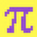

⚙
搜索
搜索引擎
百度
必应
背景
每日一图
自定义
应用
页面布局
显示导航
显示天气
恢复默认
关于本站
00:00
全部
综合
导航
百科
论坛
小说
图片
游戏
音乐
工具
mlp官网
孩之宝mlp官网
去bilibili观看
B站不用多说了吧

小马中国
EquestriaCN
小马国空间联合国
飞马天文观测站的学术项目
坎特洛特-交通枢纽
一个极全的mlp导航网站
小马国公民一站通
mlp学术导航网站
灰机wiki
MLP中文维基
Fandom页面
MLP英文维基
萌娘百科页面
彩虹小马 萌娘百科
百度百科页面
小马宝莉 百度百科
小马宝莉吧
百度贴吧
FimTale
中文小马同人小说网站
FimFiction
英文小马同人小说网站
Derpibooru
又称呆站，mlp同人图网站
Derpibooru（备用域名）
主域名被墙就用这个
Pony Town
小马镇，面向全球的线上虚拟社交游戏
Ambient.White
画质最高的小马同人游戏之一
Fallout Equestria
辐射小马国:废墟，2D射击+RPG游戏
Mine Little Pony Mod
可以让你在MC里变成小马的Mod
PonyvilleFM
马镇电台
My Little Software
小马程序汇总，编程是魔法！
15.ai
很牛的ai配音网站，同人作者福利
GD资源站
可以下载/在线观看mlp剧集
GD资源站(备用源)
主用源挂了就用这个